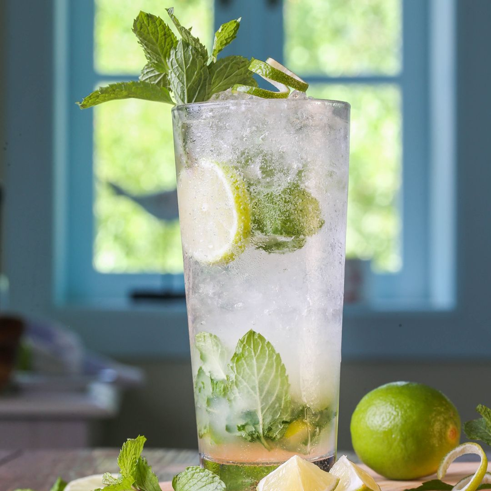

The Friday Drink
The Friday Drink
Mojito
Mojito is probably the most famous and popular drink in the world, and it has all the right to be! It's the ultimate combination of sweet, sour & freshness. The recipe below is according to us the best Mojito, but it's of course allowed to adjust to your own personal taste and preferences. Please comment below how you'd mix your own Mojito.
Ingredients
- 4 cl Light rum
- 3 cl Limejuice
- 3 cl Syrup
- 4 cl Soda
- Mint